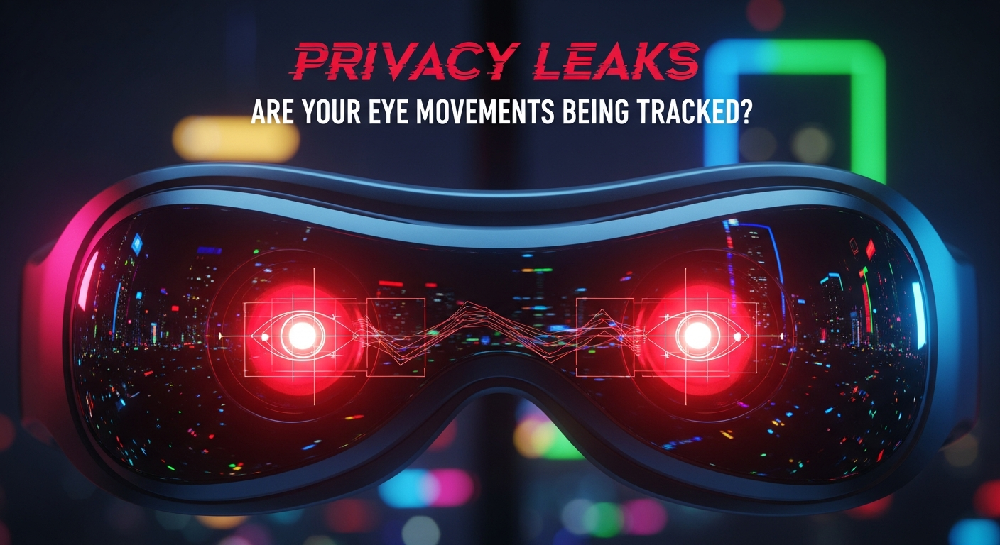

The dawn of spatial computing with devices like the Apple Vision Pro ushers in an era of unparalleled immersion, but it also casts a long shadow of unprecedented privacy questions. At the heart of this debate lies the device’s sophisticated eye-tracking technology, a cornerstone of its revolutionary interface. As users navigate digital worlds with mere glances and authenticate with their unique iris patterns, a pressing concern emerges: are our most involuntary and revealing actions – our eye movements – being tracked, stored, or even leaked? This article delves deep into the intricate mechanisms of the Vision Pro’s privacy architecture, scrutinizing Apple’s assurances against the inherent vulnerabilities of such intimate biometric data, and exploring the profound implications for personal privacy in a world where our gaze becomes a digital cursor.
The Apple Vision Pro stands as a monumental leap in personal computing, primarily due to its innovative input methods, chief among them being its advanced eye-tracking system. This system is not merely a supplementary feature; it is the fundamental pillar upon which the entire user experience is built. At its core, the Vision Pro employs a sophisticated array of infrared illuminators and high-resolution cameras to precisely monitor the user's eye movements. This technology, dubbed "Optic ID" for authentication purposes, goes far beyond simple gaze detection; it registers the intricate patterns of the iris, the subtle dilations of the pupil, and the micro-saccades that define our visual exploration of the world.
Optic ID, Apple's biometric authentication system for the Vision Pro, functions similarly to Face ID on iPhones, but it leverages the unique characteristics of the user's irises. When a user sets up Optic ID, the device captures high-resolution infrared images of their eyes, creating an encrypted mathematical representation of their iris patterns. This data is then stored securely within the Vision Pro's Secure Enclave, a dedicated, isolated hardware subsystem designed to protect sensitive information. Apple explicitly states that this biometric data is processed entirely on-device and is never transmitted to Apple's servers or shared with third-party applications. This on-device processing is a critical distinction, as it theoretically prevents the creation of a centralized database of users' biometric identities, a significant concern for privacy advocates.
Beyond authentication, the eye-tracking system is pivotal for navigation and interaction. Users select, scroll, and interact with applications and content simply by looking at them. This requires continuous and precise tracking of the user's gaze direction. The Vision Pro’s custom R1 chip, specifically designed for real-time sensor processing, plays a crucial role here. It processes input from the 12 cameras, five sensors, and six microphones, ensuring that eye movements are translated into seamless digital actions with virtually no latency. The raw data – the precise coordinates of where the user is looking at any given millisecond – is incredibly granular. This real-time gaze data is essential for the device’s functionality, allowing for intuitive control without the need for traditional controllers. However, the sheer intimacy and precision of this data raise immediate questions about its potential for misuse, even if Apple's initial assurances seem robust. Understanding the technical architecture, from the infrared emitters that illuminate the eye to the neural engines that interpret the data, is paramount to appreciating both the power and the peril of this groundbreaking technology.
The distinction between Optic ID (authentication) data and general gaze data (navigation) is vital. While Optic ID data is strictly confined to the Secure Enclave for biometric verification, the ongoing gaze data, which dictates where the user's attention is focused, represents a different category. Apple claims that this raw gaze data, used for system navigation, also remains on-device and is not shared with Apple or third-party apps. However, the accessibility of *derived* or *aggregated* gaze information to developers, even if anonymized, is where the privacy landscape becomes more complex and potentially concerning. The advanced nature of the Vision Pro's eye-tracking system, therefore, is a double-edged sword: it offers unparalleled interaction but simultaneously opens new frontiers for data collection and potential privacy challenges that demand meticulous scrutiny.
Apple has meticulously cultivated a reputation as a champion of user privacy, often positioning itself in stark contrast to other tech giants whose business models are heavily reliant on data monetization. This privacy-first narrative is deeply embedded in their marketing and product development philosophy, extending prominently to the Vision Pro. Apple's official statements regarding the Vision Pro's privacy architecture emphasize "on-device processing" as the cornerstone of their commitment. They assert that sensitive biometric data, such as the iris scans used for Optic ID, never leaves the device and is securely stored within the Secure Enclave, impervious to access by Apple itself or any third-party applications. Furthermore, the company claims that the raw, precise eye-tracking data used for navigation and interaction also remains confined to the device, processed locally by the R1 chip to facilitate the user interface without being transmitted externally.
However, the reality of privacy in complex ecosystems often involves nuances that can blur the lines between marketing assurances and practical implications. While Apple’s commitment to on-device processing for raw biometric and gaze data is a significant safeguard, the broader ecosystem introduces potential vectors for data leakage or inference. For instance, while raw eye movements may not leave the device, third-party applications can, with user permission, access aggregated or anonymized gaze data. Developers might be able to glean insights into user behavior, attention, and engagement within their specific applications. Apple's developer guidelines, while stringent, must allow for some level of interaction data to enable app functionality and improvement. The critical question then becomes: what level of aggregation or anonymization is truly sufficient to prevent de-anonymization or the inference of highly sensitive personal traits?
The "walled garden" approach, characteristic of Apple's ecosystem, offers both benefits and drawbacks concerning privacy. On one hand, Apple exercises tight control over app store submissions, mandating adherence to strict privacy policies and security standards. This centralized vetting process theoretically reduces the risk of malicious applications surreptitiously collecting sensitive data. On the other hand, a closed ecosystem can also limit independent scrutiny and the development of third-party privacy tools that might offer users more granular control or transparency beyond what Apple provides. The trust users place in Apple to act as the sole arbiter of privacy within this ecosystem is immense.
Comparing the Vision Pro to other Apple devices, such as those with Face ID or Touch ID, provides context. In those instances, biometric data is also processed and stored locally within the Secure Enclave. The difference with Vision Pro lies in the continuous, intimate nature of eye-tracking not just for authentication but for every single interaction. This constant stream of attention data, even if anonymized and aggregated, has the potential to paint an incredibly detailed picture of a user's interests, cognitive processes, and even emotional states over time. While Apple's privacy policy explicitly states that eye tracking data is not used for advertising or marketing, the potential for such data to be used by third-party applications, even indirectly or through inferred patterns, remains a significant area of concern that transcends simple "on-device processing" claims. The gap between Apple's aspirational privacy marketing and the complex realities of a rich, interactive spatial computing environment necessitates continuous vigilance and transparent communication regarding data flows.
Beyond the immediate concerns of authentication and navigation, the continuous collection of gaze data by devices like the Apple Vision Pro opens a Pandora's Box of potential inferences about a user's cognitive and emotional state. Our eyes are not merely windows to the soul; they are highly sophisticated sensors that betray our innermost thoughts, intentions, and reactions. When a device tracks precisely where we look, for how long, and with what frequency, it gathers an astonishing wealth of information that extends far beyond simple interaction metrics. This data, even in an anonymized or aggregated form, can be leveraged to infer a staggering array of personal attributes and behaviors, transforming our gaze into a powerful, albeit often unconscious, digital fingerprint.
Consider the spectrum of insights derivable from detailed eye movement patterns. Researchers have long established correlations between gaze behavior and emotional states, such as confusion, surprise, delight, or frustration. A prolonged stare at a particular object might indicate interest or desire, while rapid, scattered glances could suggest anxiety or distraction. Cognitive load can be inferred from pupil dilation and fixation duration. In the context of spatial computing, where digital content seamlessly blends with the real world, tracking where a user's attention is directed can reveal their preferences for certain brands, products, or types of content. This granular level of behavioral data moves beyond traditional click-through rates or page views; it measures genuine, often subconscious, engagement.
The implications for advanced profiling are profound. Imagine a scenario where a third-party application, even if only accessing aggregated gaze data within its own environment, could deduce a user's likely purchasing intent based on their sustained focus on certain virtual products. Or, consider the potential for micro-targeting advertisements based on inferred emotional responses to specific stimuli. This goes beyond traditional demographic targeting; it enables a form of "gaze-based surveillance capitalism," where the most intimate aspects of our attention become commodities. Furthermore, medical and psychological conditions might be subtly revealed through anomalous eye movement patterns. Conditions like ADHD, autism, Parkinson's disease, or even early signs of dementia can manifest in distinctive ocular behaviors. While this could potentially offer diagnostic benefits, it also raises serious ethical questions about involuntary health data collection and the potential for discrimination.
The future integration of eye-tracking data with advanced Artificial Intelligence and machine learning algorithms further amplifies these concerns. AI models, trained on vast datasets of gaze patterns, could become incredibly adept at predicting user behavior, understanding intentions, and even anticipating desires before they are consciously articulated. This predictive analytics capability, while offering personalized experiences, simultaneously erodes personal autonomy and privacy. The value of this data to various entities – advertisers seeking unparalleled targeting precision, researchers studying human cognition, or even governments interested in citizen surveillance – is immense. The very act of looking, a fundamental human action, transforms into a data point, contributing to an ever-growing digital dossier. The shift from "what you click" to "what you look at" represents a fundamental change in the depth and intimacy of data collection, demanding a re-evaluation of privacy norms and protections in the era of spatial computing.
When discussing "privacy leaks" in the context of advanced biometric devices like the Apple Vision Pro, it's crucial to differentiate between documented security breaches and theoretical vulnerabilities or unintended data inferences. As of the current understanding and Apple's public statements, there have been no widely reported or documented instances of raw Optic ID biometric data or raw, precise eye-tracking data being "leaked" from the Vision Pro in the traditional sense of a security breach where sensitive information is exfiltrated without authorization. Apple's robust Secure Enclave architecture and their emphasis on on-device processing are designed precisely to prevent such direct data exfiltration, creating a high barrier to entry for malicious actors seeking raw biometric identifiers.
Protect your identity and browse privately with Surfshark One - the all-in-one security suite.
GET 60% OFF SURFSHARK NOWHowever, the concept of a "leak" in this context extends beyond direct unauthorized access to raw data. It encompasses scenarios where data, even if anonymized or aggregated, could be used to infer sensitive information, or where policy changes or developer practices could inadvertently expose user behaviors. One of the primary theoretical vulnerabilities lies in the interaction with third-party applications. While Apple's App Store guidelines are stringent, developers can request access to certain forms of aggregated or anonymized gaze data within their own app environments. For example, an app might track how long a user looks at specific elements within its interface to optimize design or content. If multiple apps, or even a single sophisticated app, collect enough of this aggregated behavioral data over time, there's a theoretical risk of de-anonymization. Advanced machine learning techniques, combined with other contextual data (e.g., app usage patterns, time of day), could potentially piece together a unique profile, even from seemingly innocuous data points.
Another area of concern involves side-channel attacks or sophisticated malware. While Apple's operating system (visionOS) is designed with multiple layers of security, no system is entirely impervious to determined attackers. A highly sophisticated piece of malware, if it were to bypass Apple's security protocols and gain deep system access, could theoretically intercept or manipulate the flow of gaze data before it is processed or aggregated. Such an attack would be extremely complex and would likely require zero-day exploits, but the possibility, however remote, underscores the continuous cat-and-mouse game between security researchers and malicious actors. Furthermore, the inherent complexity of spatial computing environments, with their numerous sensors and real-time data streams, introduces a larger attack surface compared to simpler devices.
Beyond direct technical vulnerabilities, there are "leaks" that arise from policy or design choices. For instance, if Apple were to change its privacy policy in the future to allow for broader access to anonymized gaze data for advertising purposes, or if regulatory bodies mandate data sharing under specific circumstances, this would represent a policy-driven "leak" of behavioral insights, even if the raw biometric data remains secure. The sheer volume and intimacy of the data collected by the Vision Pro mean that even small, seemingly insignificant pieces of information could, when combined, create a comprehensive and potentially exploitable profile of a user's habits, interests, and even vulnerabilities. The challenge for Apple, and for the broader industry, is to continually audit, transparently communicate, and proactively mitigate these theoretical and practical vulnerabilities, ensuring that the promise of spatial computing does not come at the cost of fundamental privacy rights.
Navigating the complex privacy landscape of the Apple Vision Pro requires a combination of robust built-in protections, vigilant user practices, and a critical understanding of data flows. While Apple has implemented significant safeguards, particularly concerning raw biometric and gaze data, users are not entirely powerless in enhancing their privacy. A multi-faceted approach involving device settings, app permissions, and an informed perspective is essential to mitigate potential privacy risks associated with this groundbreaking technology.
Firstly, Apple’s visionOS, the operating system powering the Vision Pro, incorporates several fundamental privacy controls that users should familiarize themselves with. Similar to iOS, visionOS includes a comprehensive permissions system. When a third-party application requests access to sensitive data, such as the camera, microphone, or potentially aggregated eye-tracking data (if such APIs become available), the system will prompt the user for explicit consent. Users should meticulously review these permission requests, understanding precisely what data an app intends to access and why. Denying unnecessary permissions is a crucial first line of defense. Furthermore, users should regularly review and manage app permissions through the device’s settings, revoking access for apps they no longer trust or use frequently. Apple also provides detailed privacy reports, which can offer insights into which apps have accessed certain data types, helping users identify potentially over-reaching applications.
Beyond operating system controls, user behavior plays a pivotal role. Adopting a "privacy-by-design" mindset when interacting with the Vision Pro is paramount. This includes carefully vetting third-party applications before installation, scrutinizing their privacy policies (which are often linked on the App Store), and opting for reputable developers known for their commitment to user privacy. Users should be wary of apps that request an unusually broad range of permissions or those from unknown developers. Regularly updating visionOS and all installed applications is another critical practice, as updates often include security patches that address newly discovered vulnerabilities and enhance privacy protections. Apple's commitment to timely security updates is a significant advantage in this regard.
Given the nascent stage of spatial computing, dedicated third-party privacy tools specifically for the Vision Pro are still evolving. However, the principles of general digital hygiene apply. Using strong, unique passwords (or leveraging Optic ID where appropriate), enabling two-factor authentication for Apple ID and other critical accounts, and being cautious about the content viewed or interacted with in public spaces are all essential. While a "privacy VPN" might be less relevant for on-device gaze data, it remains crucial for encrypting network traffic and protecting IP addresses when browsing the web or using online services through the Vision Pro.
Looking ahead, as spatial computing matures, there will likely be a growing demand for more granular user controls over biometric and behavioral data. This could include features such as "gaze-blocking" modes for specific applications, clearer indicators of when eye-tracking data is being processed (even on-device), and enhanced transparency tools that visualize how aggregated data is being used. Advocacy for stronger regulatory frameworks, like GDPR and CCPA, to specifically address biometric data in immersive environments will also be crucial. Ultimately, empowering users with knowledge and effective tools, coupled with a continued commitment from manufacturers like Apple, will be vital in ensuring that the privacy implications of spatial computing are proactively managed rather than reactively addressed after potential "leaks" or abuses have occurred.
The Apple Vision Pro, with its pioneering integration of eye-tracking and other biometrics into a spatial computing paradigm, represents not just a new product category but a profound inflection point for digital privacy. As we look to the future, the challenges and opportunities for biometric privacy in this evolving landscape are immense and multifaceted. Spatial computing devices, by their very nature, are designed to be intimately integrated with our physical and cognitive environments, making the data they collect exceptionally rich and personal. This raises fundamental questions about the balance between technological innovation, user convenience, and the safeguarding of individual privacy rights.
One of the most significant future challenges lies in the potential for the integration of eye-tracking with an even broader array of biometrics. Imagine a future Vision Pro, or similar device, that not only tracks your gaze but also monitors your voice inflections, gestures, heart rate, skin conductance, and even brainwave patterns in real-time. This convergence of biometric inputs could create an unprecedentedly comprehensive and continuous digital profile of an individual, capable of inferring not just their attention, but their emotional state, stress levels, cognitive workload, and even their subconscious preferences with alarming accuracy. While such data could enable truly personalized and adaptive experiences, it simultaneously poses an existential threat to personal anonymity and autonomy, blurring the lines between user and data point.
The "always-on" nature of these devices further exacerbates privacy concerns. Unlike a smartphone, which is often put away or left idle, a spatial computer is designed to be worn for extended periods, constantly observing and interpreting the user's interactions with both digital and physical environments. This continuous stream of intimate data, even if initially processed on-device, creates a persistent record of behavior that could be invaluable to various entities. The aggregation of this data over days, weeks, and years could build an incredibly detailed psychological and behavioral profile, potentially revealing habits, interests, and even vulnerabilities that the user themselves might not fully recognize.
From a societal perspective, the widespread adoption of such devices necessitates a proactive approach to regulation and industry standards. Existing privacy laws like GDPR and CCPA provide a foundation, but they may need significant adaptation to adequately address the unique challenges of biometric data in immersive environments. The concept of "informed consent" becomes particularly complex when users are constantly generating highly sensitive data through their natural interactions. There will be a critical need for transparent data governance frameworks, clear disclosure requirements for developers, and robust auditing mechanisms to ensure compliance. Furthermore, user education will be paramount, empowering individuals to understand the implications of these technologies and make informed choices about their data.
Ultimately, the future of biometric privacy in spatial computing will hinge on a delicate balance. Will we see a "privacy-first" spatial computing revolution, where innovation is coupled with an unwavering commitment to user control, transparency, and data minimization? Or will the immense commercial value of this intimate behavioral data lead to a... and implement these strategies to ensure long-term success.
In summary, staying ahead of these trends is the key to business longevity and security. By following this guide, you maximize your growth and ensure a stable digital future.
Don't wait for the headlines. Our Private Telegram Channel delivers real-time AI security updates and digital wealth strategies before they go viral. Stay protected. Stay ahead.
⚡ JOIN THE 1% NOWNo sign-up required. Instantly check risks, analyze AI text, or calculate your digital finances.